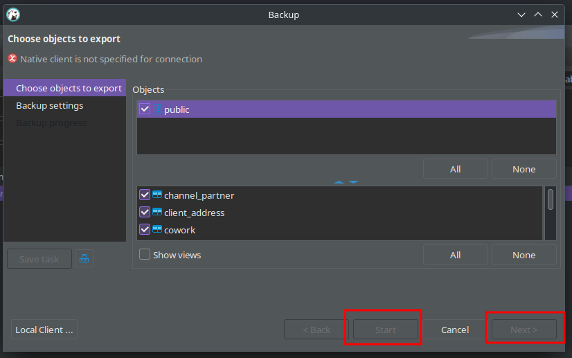
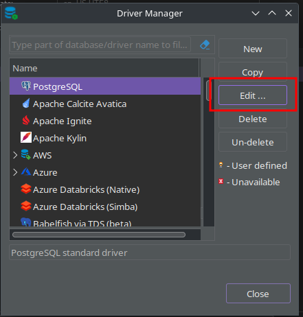
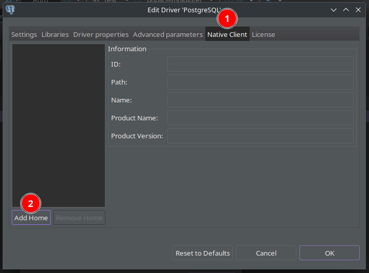
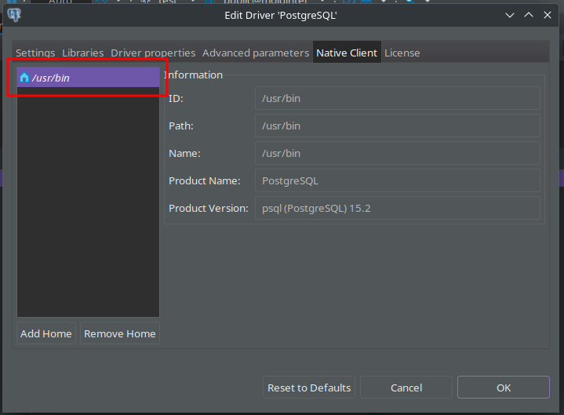
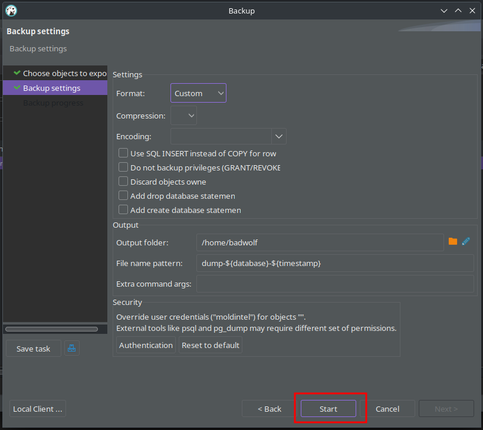

# 問題描述
在 Linux 內 DBeaver backup Start 按鈕無法點選，也無法 Next

# 環境
- OS: EndeavourOS, BUILD_ID=2023.03.06
- DBeaver Community 23.0.3
- Database: 雲端 PostgreSQL
# 修正方法
# 安裝 PostgreSQL
sudo pacman -S postgresql |
# 查看 pg_dump 位置
$ whereis pg_dump | |
pg_dump: /usr/bin/pg_dump /usr/share/man/man1/pg_dump.1.gz |
知道 pg_dump 程式位置在 /usr/bin/
# DBeaver 設定 Driver
從 DBeaver 選單開啟 Database/Driver Manager，點選 PostgreSQL 按 Edit

選取 Native Client / Add Home

設定 Home 為 /usr/bin/

# 測試
Next 可以點選了

點選 Next 後，選取備份路徑按 Start 就可以備份了
